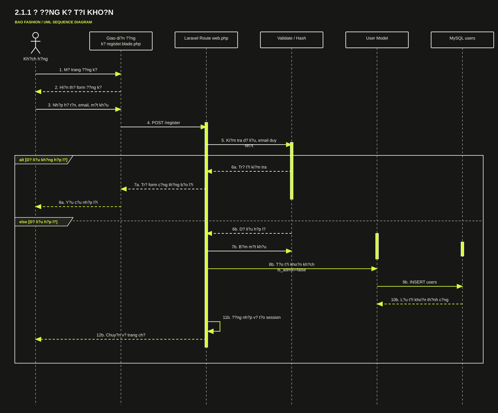
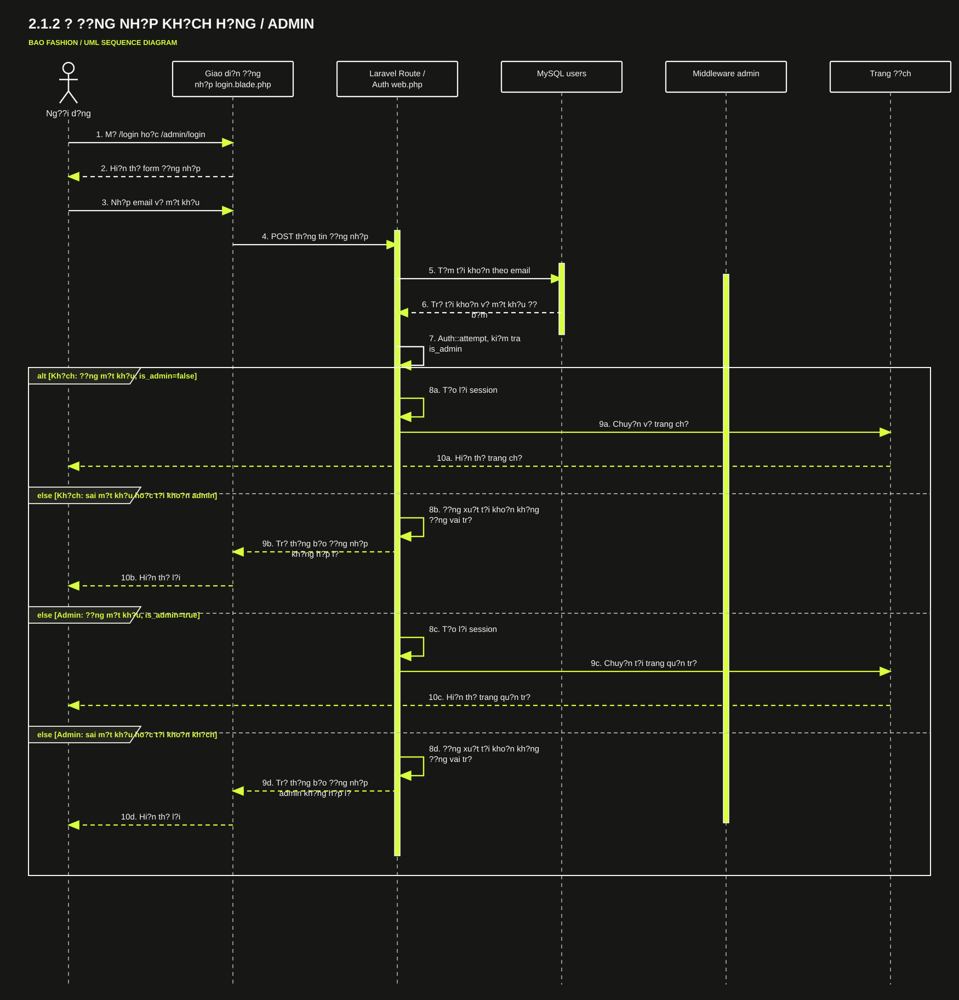
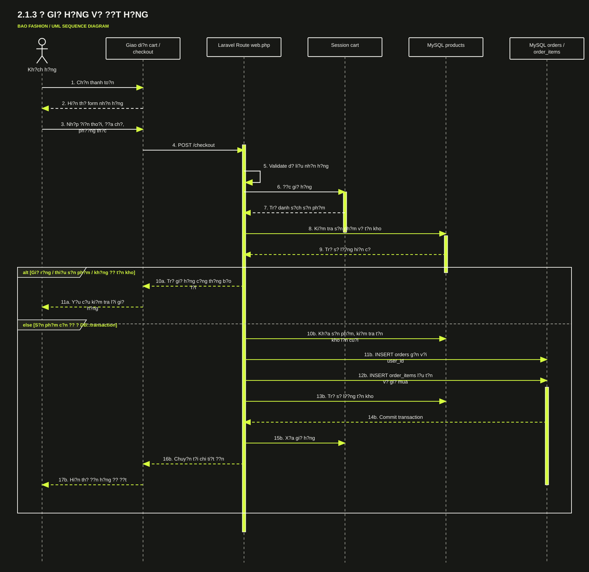
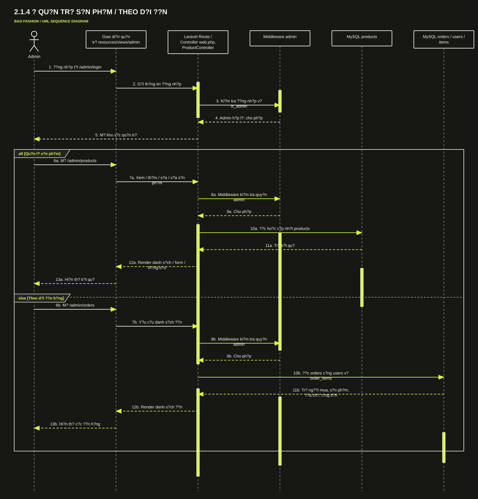
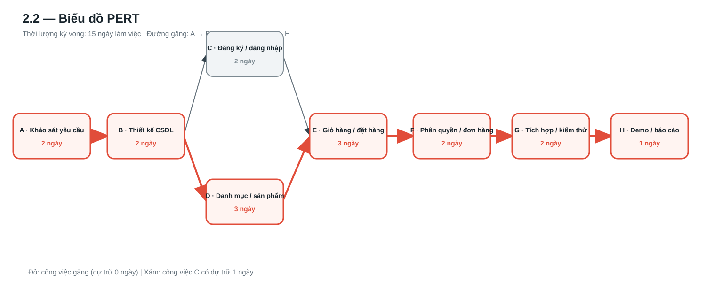
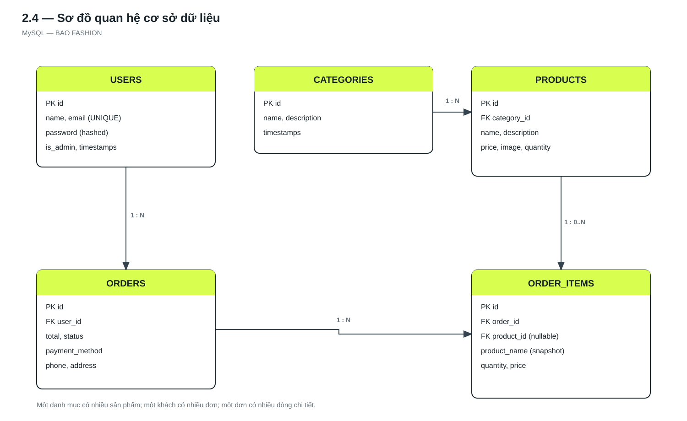

Khách hàng
Đăng ký, đăng nhập, duyệt sản phẩm, quản lý giỏ hàng, đặt mua và xem lịch sử đơn của mình.
Báo cáo dự án · Chương 2
Website bán hàng thời trang — thực nghiệm chức năng, thiết kế dữ liệu và kiểm thử.
01 · Công nghệ
02 · Chức năng
Đăng ký, đăng nhập, duyệt sản phẩm, quản lý giỏ hàng, đặt mua và xem lịch sử đơn của mình.
Đăng nhập riêng, quản lý sản phẩm và theo dõi các đơn hàng cùng thông tin người mua.
2.1.1 · Sequence diagram

Kiểm tra dữ liệu → băm mật khẩu → lưu tài khoản khách → tạo phiên đăng nhập.
2.1.2 · Sequence diagram

Laravel xác thực thông tin và xác minh vai trò trước khi cho vào trang tương ứng.
2.1.3 · Sequence diagram

Kiểm tra tồn kho → lưu đơn và chi tiết bằng transaction → cập nhật kho.
2.1.4 · Sequence diagram

Middleware xác nhận quyền admin trước mọi thao tác quản trị.
2.2 · PERT chart

2.4 · Database

users · categories · products · orders · order_items
2.3 · Demo & kết quả
| Chức năng demo | Đường dẫn |
|---|---|
| Đăng ký / đăng nhập khách | /register · /login |
| Cửa hàng / giỏ hàng / thanh toán | /products · /cart · /checkout |
| Đăng nhập / quản trị admin | /admin/login · /admin/products |
| Theo dõi đơn mua | /admin/orders |
Kết luận
BAO FASHION kết nối trải nghiệm mua sắm với quản lý sản phẩm và đơn hàng trong cùng một hệ thống.
Mua sắm và theo dõi đơn cá nhân.
Quản lý sản phẩm và theo dõi đơn tập trung.